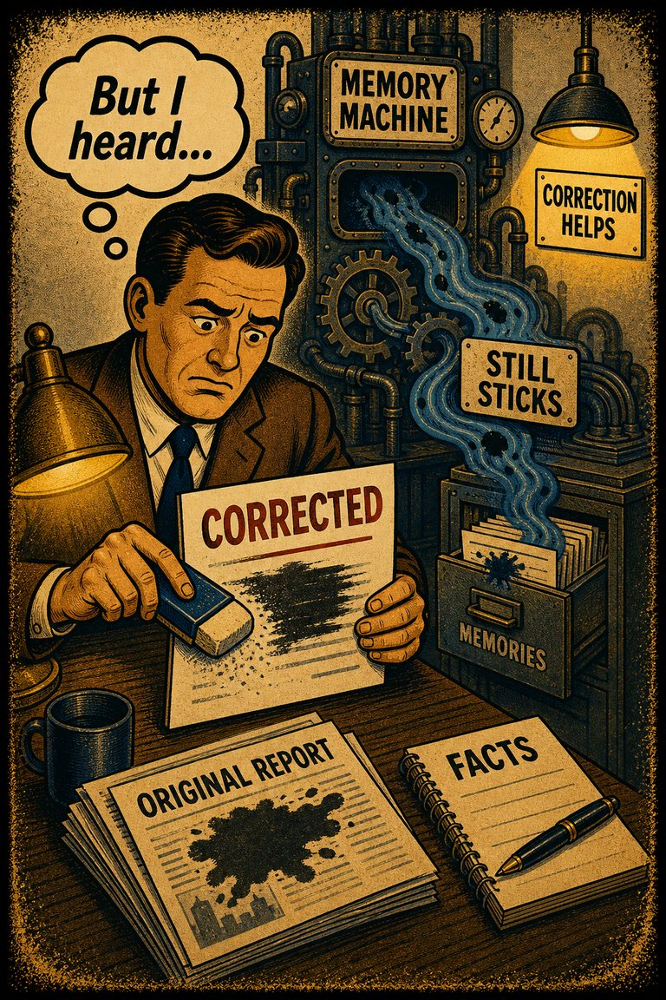
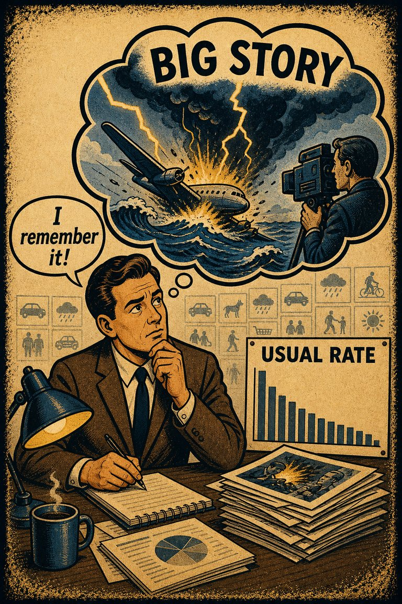
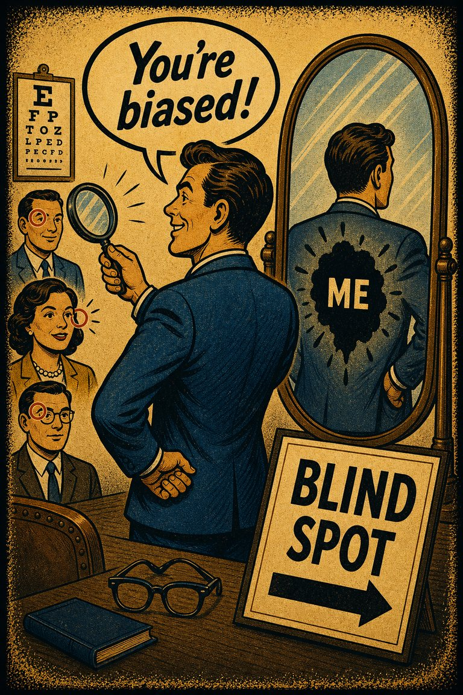

A self-reinforcing process in which a collective belief gains more and more plausibility through its increasing repetition in public discourse (or "repeat something long enough and it will become true"). See also availability heuristic
Hypothesis AssessmentAssociation
The tendency to do (or believe) things because many other people do (or believe) the same. Related to groupthink and herd behavior
Opinion ReportingOutcome

Misinformation continues to influence memory and reasoning about an event, despite the misinformation having been corrected. cf. misinformation effect, where the original memory is affected by incorrect information received later
RecallInertia
The frequency illusion is that once something has been noticed then every instance of that thing is noticed, leading to the belief it has a high frequency of occurrence (a form of selection bias ). The Baader–Meinhof phenomenon is the illusion where something that has recently come to one's attention suddenly seems to appear with improbable frequency shortly afterwards. It was named after an incidence of frequency illusion in which the Baader–Meinhof Group was mentioned
RecallBaseline
Where imagination is mistaken for a memory
RecallAssociation

The tendency to judge frequency, risk, or importance by how easily examples come to mind.
EstimationAssociationMedia & politicsPersonal decisions
The tendency to perceive meaningful connections between unrelated things
Causal AttributionOutcome

The tendency to notice, seek, and remember evidence that supports the story you already prefer more readily than evidence that threatens it.
Hypothesis AssessmentOutcomeMedia & politicsResearch & evidence

The tendency to see oneself as less biased than other people, or to be able to identify more cognitive biases in others than in oneself
Opinion ReportingSelf-Perspective